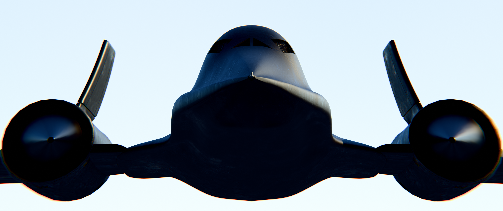
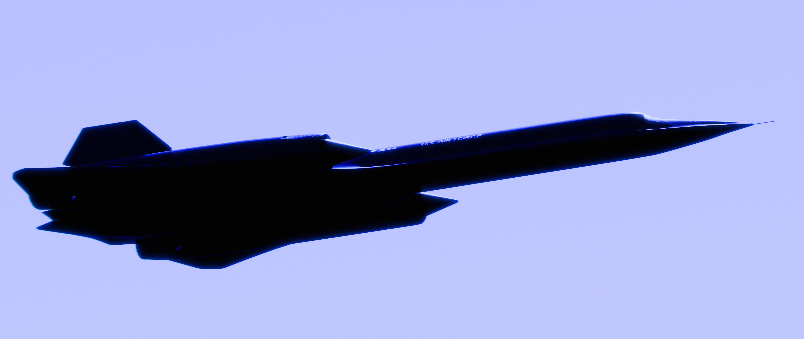
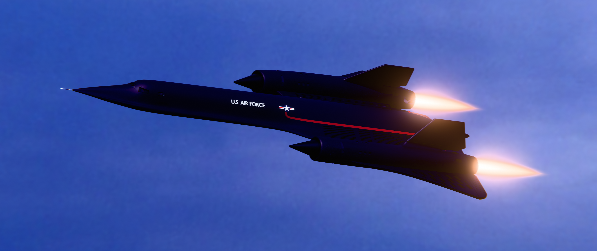
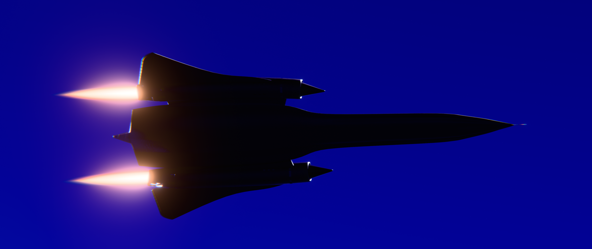
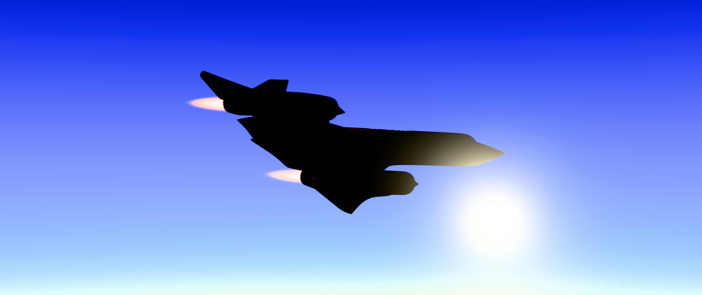

This was my second hardest model right under the Lunar Module due to the BlackBird's unique shape. I made this model during April of 2026 and I wanted to fight an odd shape I felt would give me a challenge after the Boy in the Black Suit project and I thought why not make one of the fastest planes in history where I could see how well I could make certain shapes while also trying to make high velocity scenes.




